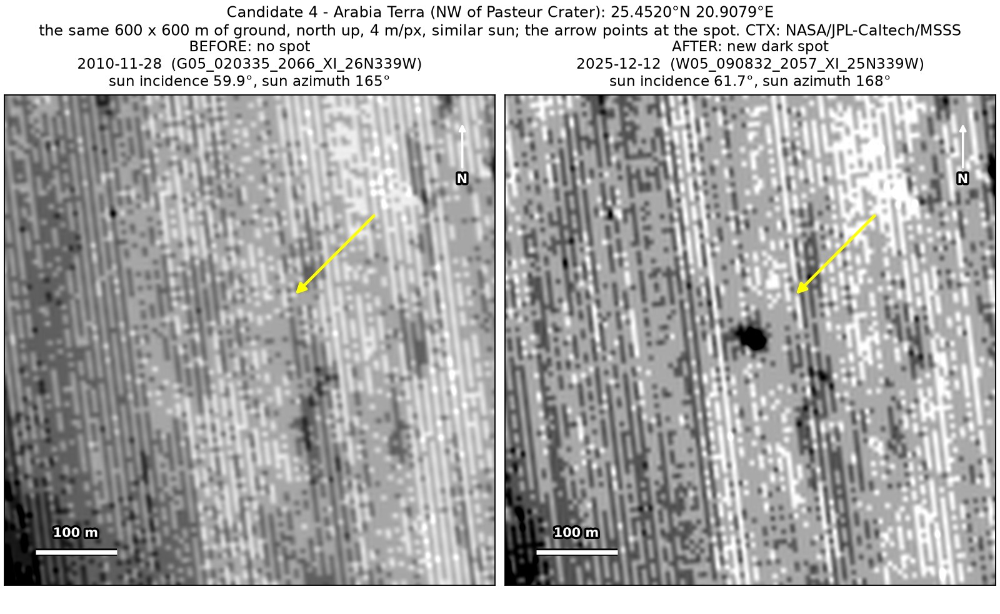
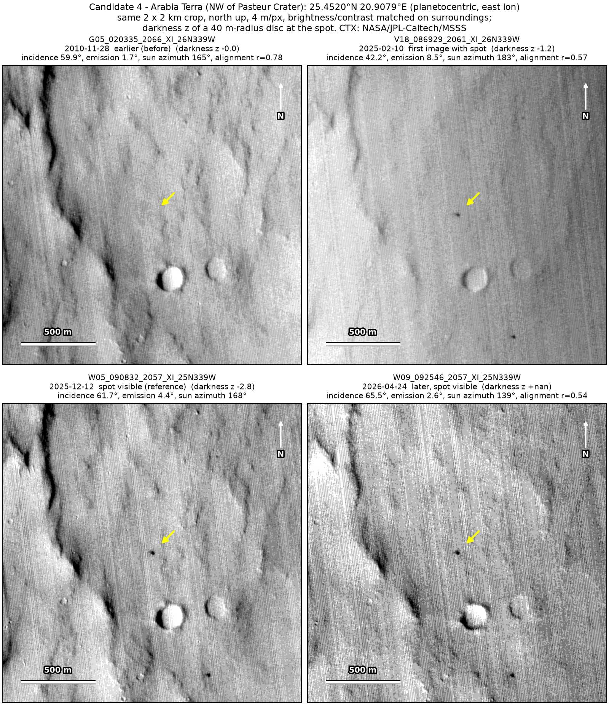
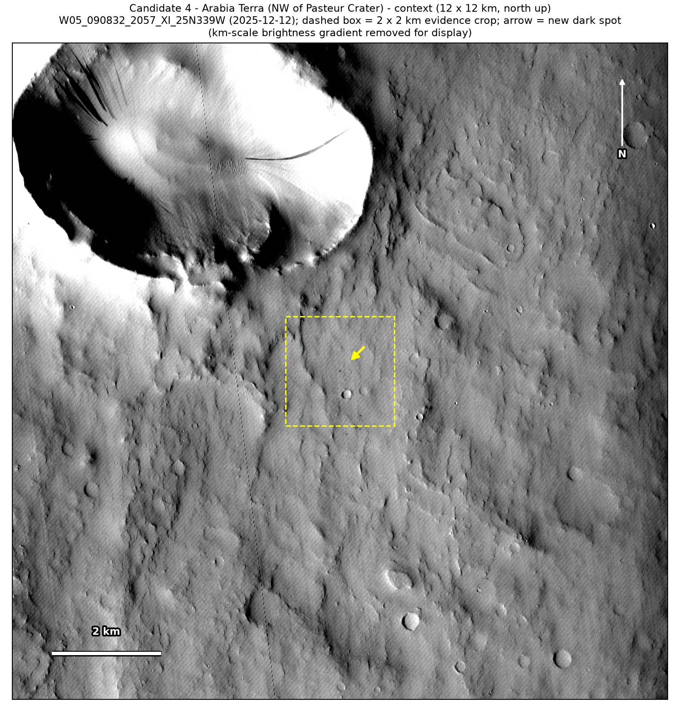
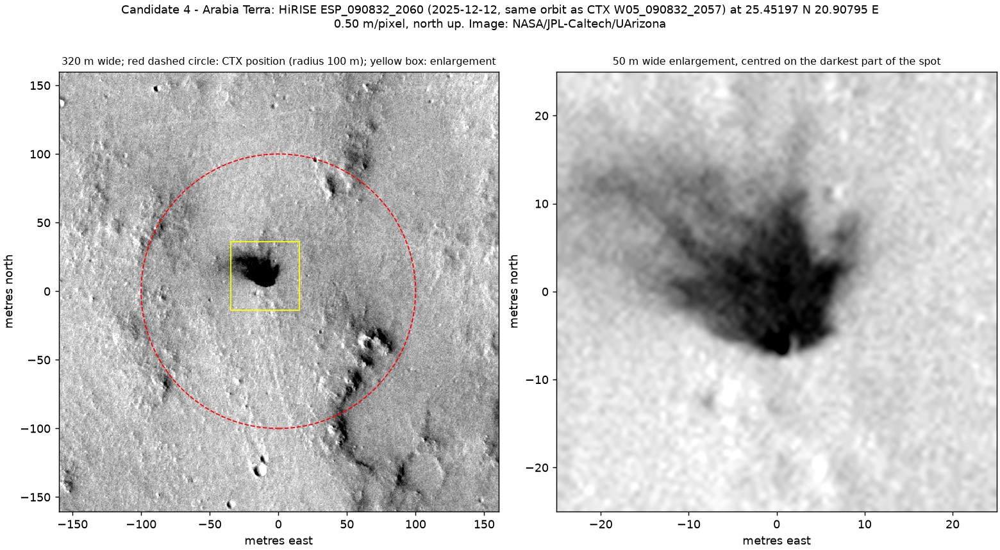

Professor of Mathematics
Paata Ivanisvili
Department of Mathematics, University of California, Irvine

← Possible new impact sites on Mars
Candidate 4: Plains in Arabia Terra, north-west of Pasteur crater
Strong · roughly 80%

What changed. A small dark spot with a tail, its core about 21 m across, appeared on plains in Arabia Terra, north-west of Pasteur crater, between November 2010 and February 2025. It shows in three CTX images up to April 2026 and in one HiRISE image.
Why it may be a new impact. The only earlier image, from November 2010, was taken under almost the same sun as the December 2025 image and shows nothing there. In the HiRISE image the spot is a sharp dark patch with finger-like edges on flat, dusty ground, with a dark point 1 to 2 m across at its edge, which is how the blast zone of a very small new crater looks.
- Location
- 25.452° N, 20.908° E
- Absent
- 28 November 2010
- Present
- 10 February 2025, 12 December 2025 (two images, CTX and HiRISE) and 24 April 2026
- Size
- Dark core about 21 m across, 47 × 29 m including its tail
- Confidence
- Strong candidate: roughly 80% likely to be a new impact.
- Nearby
- Candidate 10, 4.6 km away, appeared in the same time window.
- Caveat
- By chance, NASA’s HiRISE camera photographed the spot on 12 December 2025, after it formed. Only one earlier image, from November 2010, shows the ground as it was before. The main alternative is a patch where wind has stripped away the dust, but that is unlikely, as the spot is compact and has a dark point at its edge. Like every candidate here, it is unconfirmed: see the caveat.


